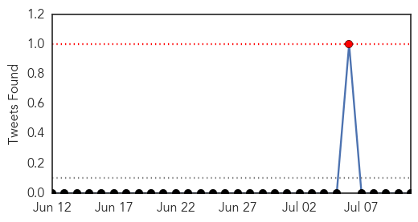

30 Day Trends
Web: 0 alerts, 0 warnings
Twitter: 1 alerts, 0 warnings
Top Articles:
- 0.992
- South Sudan Red Cross mobilizes volunteers to combat cholera in Juba - South Sudan
- 0.991
- Cholera Vaccine Protects Whole Community, Even Unvaccinated « Israel Grossman Article.Org
- 0.989
- Cholera Cases Overwhelm Achimota Hospital
- 0.983
- South Sudan: South Sudan Red Cross mobilizes volunteers to combat cholera in Juba
- 0.832
- Oral cholera vaccine moderately effective in reducing the burden of severely dehydrating diarrhea
- 0.761
- Over 150,000 South Sudanese now sheltering in UN bases
- 0.703
- Attention People Who Eat Dog Meat! Here are 3 Major Health Concerns You Should Know About
- 0.680
- Better Maps, Less Cholera?
- 0.631
- Medics flee war-torn S. Sudan leaving patients to die
Top Tweets:
-
No tweets found for Jul 11, 2015
Web/News Articles

Tweets
Article Locations

Article Confidences